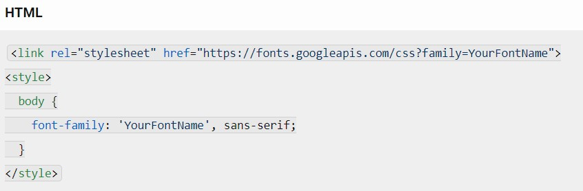
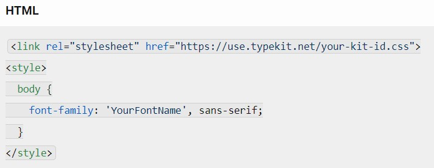
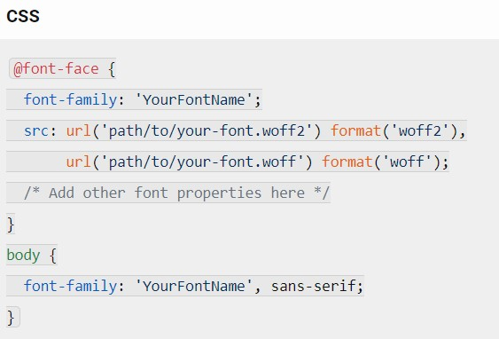

How a specific font can be delivered to a client (browser) making a request to your server ?
When a client’s browser requests content from your server, you can ensure that a specific font is delivered to it using the following techniques:
1. CSS Embedded Fonts (font-face)
2. Font Hosting Services
3. Self-Hosting
Certainly! Let’s delve into the second point, which involves using font hosting services to ensure that specific fonts are delivered to clients’ browsers:
Font Hosting Services:
What are they?
Font hosting services provide a convenient way to access and use a wide variety of fonts on your website. These services host font files on their servers, making it easy for you to include them in your web pages.Why use them?
- Wide Selection: Font hosting services offer extensive catalogs of fonts, including both free and premium options.
- Global Availability: Fonts are served from content delivery networks (CDNs), ensuring fast and reliable access for users worldwide.
- Version Control: Updates and improvements to fonts are managed by the service, so you always have the latest versions.
How do they work ?
- Choose a font hosting service (e.g., Google Fonts, Adobe Fonts, or self-hosted solutions)
- Link to the hosted font files in your HTML or CSS.
- Specify the font family in your CSS rules.
Examples
- Google Fonts:
Google Fonts provides a vast collection of open-source fonts. To use a font from Google Fonts:
- Visit the Google Fonts website.
- Choose a font.
- Click the “Select This Font” button.
- Copy the provided <link> tag and add it to your HTML <head>.
- Apply the font to your elements using CSS.

- Adobe Fonts:
Adobe Fonts (formerly Typekit) offers a vast library of high-quality fonts. You can include them in your project by linking to Adobe’s servers.

- Self-Hosted Fonts:
If you prefer to host fonts on your own server, you can do so by using the @font-face rule (as discussed in the first point).

- Browser Support: Font hosting services work across modern browsers, ensuring consistent font rendering for your users.